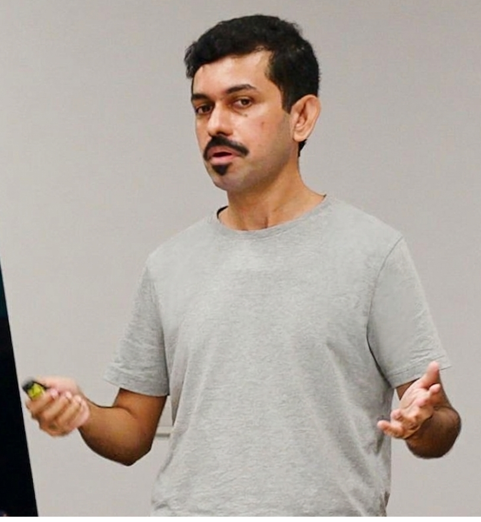

Prasanta Bhattacharya
Innovation Lead & Senior Research Scientist · Behavioral Science, AI & Network Science · Executive Education, Strategy & Decision-making

Thank you for visiting my webpage.
I am an applied research scientist and innovation lead at A*STAR Singapore, working at the intersection of AI, behavioral science, and network analytics. I design and lead interdisciplinary studies with a strong focus on translating research insights into measurable business impact. I have led multi-year collaborations with internal and external partners, and managed a seven-figure portfolio of funded research initiatives across domains.
In addition to my research leadership, I have served as business school faculty, teaching postgraduate students and senior executives across Asia and Europe. I am a Prosci® Certified Change Practitioner (ADKAR), and also trained in R&D value-sizing frameworks, tech transfer, and contract law.
My research bridges topics and methods from behavioural science, network science, and machine learning to address challenging problems in emerging markets. The following are examples of topics that I am particularly interested in:
- Analyzing user behavior on large and complex social networks using digital trace data, focusing particularly on the estimation of network effects. (Skim through this and this for examples of work in this area).
- Building computational models of cognition (e.g., attitudes or motivations) and behavior (e.g., stances) using fine-grained data from online platforms, and studying the effectiveness of emerging applications that can benefit from this e.g., designing human-centric AI models.
- Answering causal inference problems in emerging business contexts using observational time-series data. This is particularly important in the context of impact/intervention evaluation problems where randomized experiments (e.g., A/B tests) are not feasible. See this for a good example.
I bring over 13 years of experience across academia, industry, and research consulting. I have collaborated with partners from AI, social media, education, and finance sectors. Across these engagements, I have:
- Generated actionable business insights on consumer behavior at scale
- Built analytics frameworks that support strategic decision-making
- Helped organizations extract measurable value from their data investments
- Designed and delivered executive training programs in analytics and AI across APAC and Europe
If you see alignment or would like to explore a potential collaboration, feel free to reach out: e‑mail · LinkedIn.
Recent Highlights
- Position paper in ICML 2025 · Sustaining human-generated data in AI training — Read more
- Preprint on LLM-assisted psychometric measurements — Read more
- Preprint on LLM-enabled qualitative interviewing — Read more
- Preprint on LLM-enabled qualitative thematic analysis — Read more
- Paper in Social Networks (2025) · Policy evaluation in networked environments — Read more
Recent Projects
AI-Enabled Qualitative Research
LLM-assisted interviewing and theme generation
AI-Enabled Psychometrics
Measuring attitudes and stances from text using LLMs.
Policy Effects On Social Networks
Unbiased estimation of policy impact under network interference.
Read more here: [link]
Online Polarization & Misinformation
Analyzing how polarization and misinformation manifest on digital platforms
Personalized Sustainable Finance
AI-enabled personalization for sustainable finance advisory
Read more here: [link]
Psychometrics & Financial Behavior
Analyzing the link between psychological factors, financial literacy, and financial behaviour
Read more here: [link]
Industry Research
Selected list of past research projects on predictive and/or prescriptive or causal analytics with industry partners & anonymized digital datasets
Music consumption analytics [Digital media]
Estimating causal impact of new track releases on music consumption behaviour
Read more here: [link]
Learning analytics [On-demand e-learning]
Understanding learner and tutor engagement in an on-demand online tutoring platform in Asia.
Read more here: [link]
Credit risk analytics [Digital finance]
Estimating creditworthiness in an Asian microlending platform using alternative datasets.
Read more here: [link]
Online search analytics [Web search]
Identifying user search tasks using session logs from an online search engine
Read more here: [link]
Selected Publications
- Ang, E.T.Y.; Bhattacharya, P.; Lim, A.E.B. (2025). Estimating Policy Effects in a Social Network with Independent Set Sampling. Social Networks. Link
- Santy, S.; Bhattacharya, P.; Ribeiro, M.H.; Allen, K.R.; Oh, S. (2025). Position: When Incentives Backfire, Data Stops Being Human. ICML 2025. Link
- Belik, I.; Bhattacharya, P.; Knudsen, E.S. (2024). A Case for Simulated Data and Simulation-based Models in Organizational Network Research. Research Policy. Link
- Bhattacharya, P.; Gupta, R.K.; Yang, Y. (2021). Exploring the Contextual Factors Affecting Multimodal Emotion Recognition in Videos. IEEE Transactions on Affective Computing. Link
- Bhattacharya, P.; Phan, T.Q.; Bai, X.; Airoldi, E. (2019). Analyzing the Coevolution of Network Structure and Content Generation in Online Social Networks. Information Systems Research. Link
Teaching
- Delivered executive and postgraduate teaching in AI, business analytics, and fintech to globally diverse cohorts across Asia and Europe. Designed and taught an introductory course on network science & analytics for one of Asia's top Master of Science in Business Analytics (MSBA) programme at NUS Business School (2019–2025).
- Co‑led the NUS Business School–Emeritus online executive program, Business Analytics for Strategic Decisions, enabling curriculum and executive learning outcomes at scale.
Talks
Recent Conferences
- 42nd International Conference on Machine Learning (ICML 2025, Vancouver) — Position paper on sustaining human-generated data for ML. Presented by co-author (Sebastin Santy)
- International School and Conference on Network Science (NetSci 2025, Maastricht) — Fragility in Food Supply Chain. Presented by co-author (Eugene Ang)
- 11th International Conference on Computational Social Science (IC2S2 2025, Norrköping) — Agent-based model of affective polarization. Presented by co-author (Subhayan Mukerjee)
- 16th Asian Conference on the Social Sciences (ACSS 2025, Tokyo) — Are LLMs effective at conducting thematic analysis?. Presented by co-author (Aimee E. Pink)
Selected Past Talks
- July 2025 — Evolving Considerations around LLM Use. Summer Institute in Computational Social Science (SICSS), Singapore
- June 2024 — Analysing Social Networks: Concepts, Methods and Applications. SICSS, Singapore — Link
- Nov 2023 — Masterclass: Innovating with Network Science: Concepts, Methods and Applications. International Conference on Management Research (ICMR 2023), IIT Madras
- Aug 2022 — Estimating Social Influence in Online Networks: Challenges, Methods, and Applications. Socioeconomic Networks and Network Science Workshop, Waseda University
- Feb 2021 — Emerging Applications of AI & Behavioral Analytics in Financial Services. Monetary Authority of Singapore (MAS) & National Supercomputing Centre (NSCC) — Link
- Aug 2017 — Working with Social Network Data: Promises and Pitfalls. PyData SG, Google — Link
Contact
Email: prasanta.nus<at>gmail.com
Profile: LinkedIn